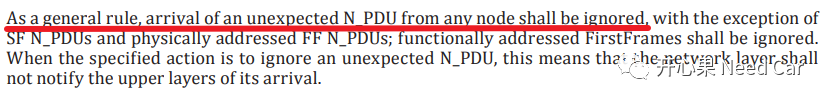
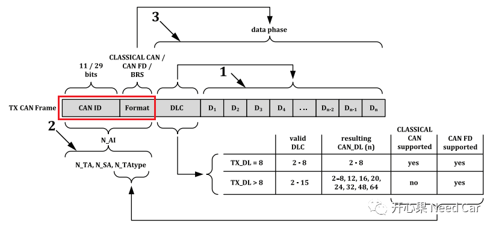
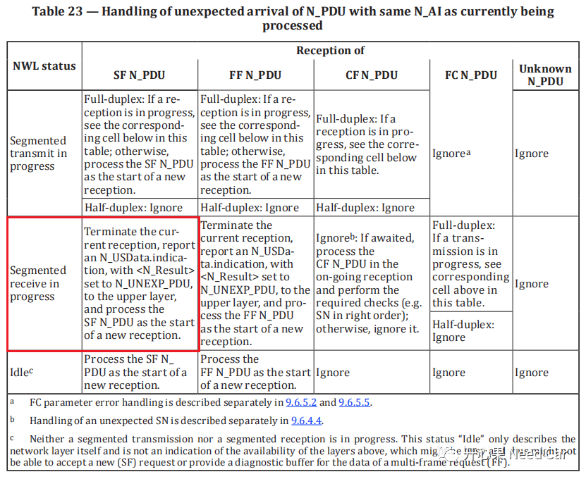
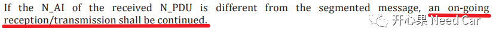
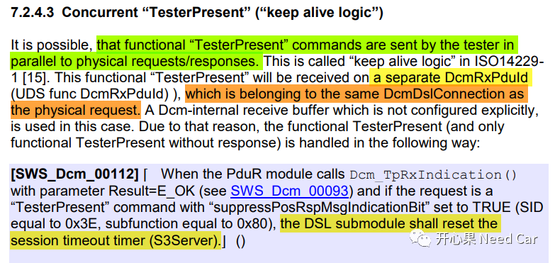

在Autosar开发问题QA：网络状态跳转、CAN DLC、3E 80发送时机一文中，提到：“连续帧的接收过程中（物理寻址），收到功能寻址的诊断服务3E 80”，接收端应如何处理？。
我们先看一下15765-2规范给的解释。
通用规则如下所示：

解释：
首先，我们先搞清楚什么是"N_AI"，N_AI：Address Information。包含：source address (N_SA)、target address (N_TA)、network target address(N_TAtype) 以及可选的address extension (N_AE)。
所以，理解N_AI是否相同，通过CAN ID亦可识别。举例：功能寻址的CAN ID（0x7FF）与某个节点的物理寻址CANID（0x610），这两个N_AI不相同。
对于相同的N_AI，如何理解？首先，CAN ID必须相同，再者，报文类型必须相同，即：Classical CAN还是CAN FD，是否拓展，是否速率可变等。
如下，我们看一下15765-2，针对相同N_AI，收到非预期的N_PDU，给出的处理策略解释，如下所示：

- 物理寻址（eg：经典CAN ID = 0x610）的多帧接收过程中（连续帧接收过程中），接收端收到相同物理寻址的非预期单帧，接收端应该停止连续帧的接收，转而处理新收到的单帧。
但是这与开篇提到的工况有所不同，开篇提到的是物理寻址接收连续帧的过程中收到功能寻址的单帧（$3E 80）,显然“a”规则不适用。需要使用“通用规则”处理此种工况，即：继续连续帧的接收，功能寻址的单帧（$3E 80）仍然需要处理，不能忽略。

解释：对于不同的N_AI，多帧的接收/发送处理继续进行，不受影响。
所以，连续帧接收过程中（物理寻址），收到功能寻址的单帧（$3E 80）需要处理，既然处理就可能会遇到上一文中提到的问题：接收丢帧。提示：功能寻址的$3E 80请求的主要目的是维持非默认会话，目标节点升级过程中，不断地处理诊断指令，如果ECU均能5s内给出响应，升级节点忽略$3E 80都可以。非常规做法：底层收到$3E 80请求，不传给CanTp层/FrTp层，直接重置S3时间，降低刷写失败风险。正常处理，$3E 80应该传到DCM::DSL，重置S3时间。
- 功能寻址的$3E 80可以并行的和物理请求发送到接收端，意味着连续帧的接收过程中（物理寻址），可以接收功能寻址的$3E 80请求，且需要处理接收的3E 80（功能寻址，单帧）；
- DCM收到功能寻址的$3E 80，只送到DSL（Diagnostic Session Layer）即可，重置S3时间。
点击下方关注，一起聊聊Autosar/嵌入式，如果需要，联系作者进群，给你更专业的解答